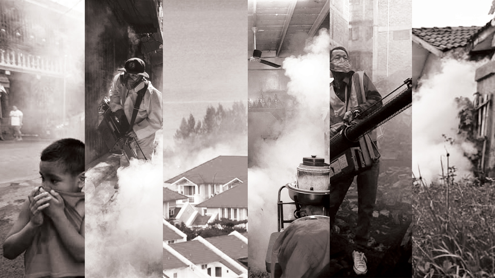
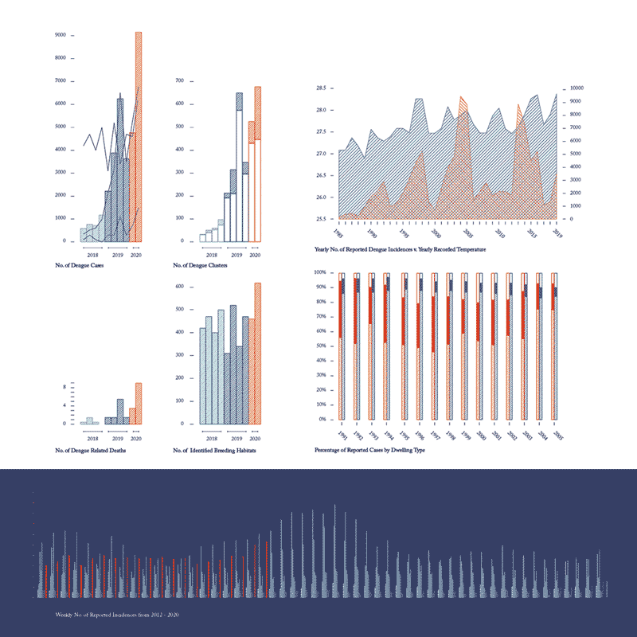
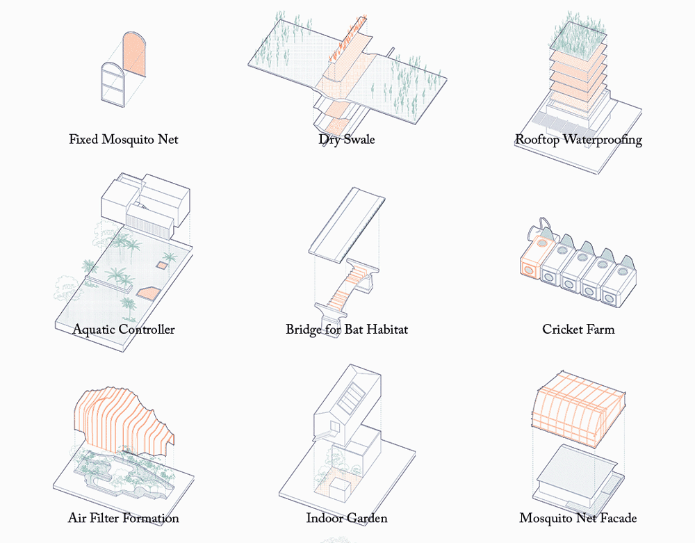
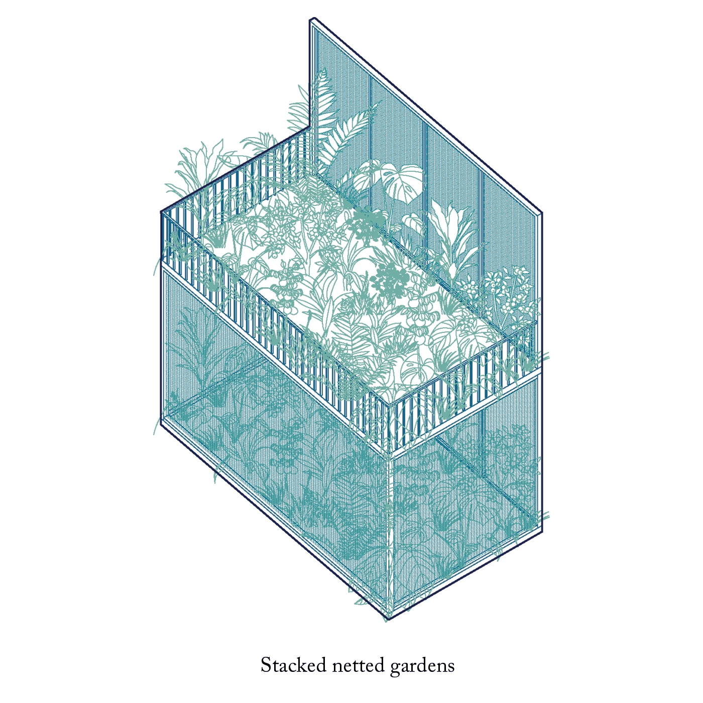
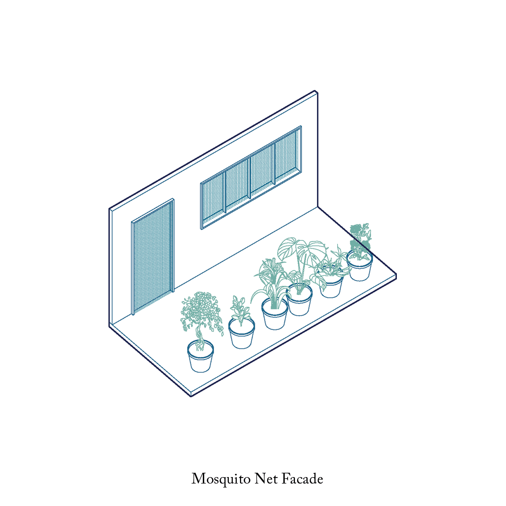
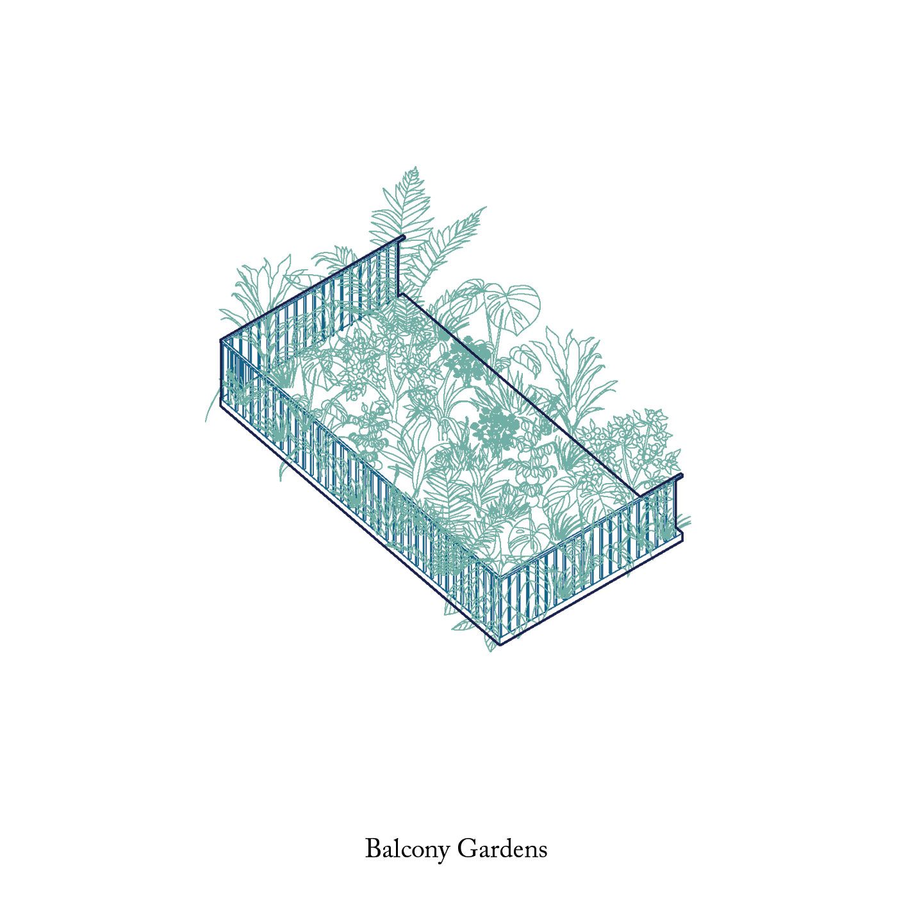
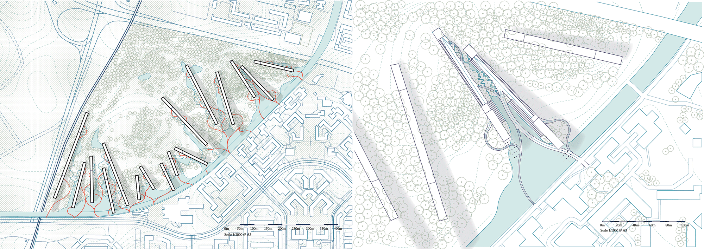
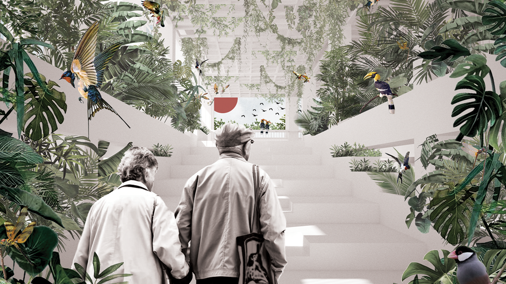
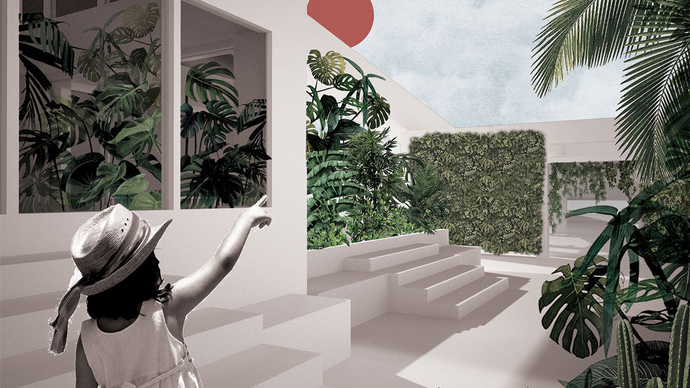
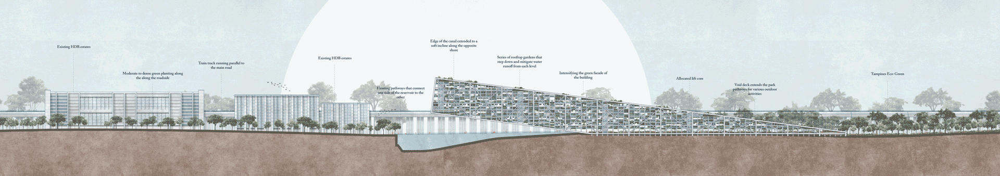

The Architecture of Epidemics: Proposal for Dengue Resilient High-Density Housing
Summary
Dengue is a global pandemic that has plagued many nations, with a major presence in South-East Asia. Despite the myriad of control measures deployed by countries in the region, their effectiveness is limited in large part due to its reliance on constant vigilance from both government organizations and individual community members, while also being unsustainable in the long-run when combating the ever-changing global climate.Trends in Singapore have shown that the number of infections in the country is on the rise, with 2020 likely to see the worst outbreak of dengue fever in years. This indicates that existing control measures are inadequate in tackling the problem, while also revealing the need for new integrated solutions that engage the issue from various angles.
The proposed building will be built on a site that exists within the Tampines region based on research done within the area. The selected site will be close to nature and allow residents who live within the building to coexist with the surrounding landscape and greenery.
Additionally, the building will aim to increase the density of greenery within the site. Units will layer its programs to ensure that the higher intensity of green does not result in more breeding areas, while also reducing the chances of interaction between residents of the building and mosquitoes.
Finally, the overall building will reconsider our relationship with stagnant water, greenery, and biodiversity, proposing a new typology that considers how all these elements can coexist harmoniously.
About Me
Throughout my studies, I have developed a keen interest in designing for living in our tropical climate, exploring how individuals can live in a unique environment that encourages close interactions with our surrounding ecology. With a focus on works that explore how spaces can and continue to change our daily interactions, this thesis was largely inspired by the continued impact of dengue fever observed in our communities.Name
Rachel Low
Mentor
Peter Ortner
Typology
Housing
Site Location
Tampines Eco-Green | Singapore
Contact

![]()

Introduction: The Architecture of Epidemics
In Beatriz Colomina’s article, X-ray Architecture: Illness as Metaphor, she talks about how people have always associated buildings with the human body, and cited the example of tuberculosis, the subsequent invention of the X-ray, and the subsequent aesthetics of modern architecture (steel and glass facades as the bones and skin of skyscrapers) as proof of this fact: that architecture will reflect what we understand of our body’s relationship with illnesses.With this in mind, this thesis focuses on the epidemic of dengue in Singapore, exploring how our built environment can evolve with what we understand of its spread and transmission, while asking the question: is the architectural solution to the problem one that requires us to live isolated from our natural world? Or can we leverage on our developed knowledge to redesign our homes in a way that meets our needs?
The Need for New Solutions
My thesis posits the following: current control measures tend to fail due to the need for constant vigilance from both the government and individual community members, while also being unsustainable in the long run with combating the ever-changing global climate. What will be needed instead are new integrated solutions that engage the transmission of the disease from various angles.With most common breeding locations in Singapore found within the home context, solutions need to discuss how individuals negotiate their living boundaries with plants, and with the larger environment. All of this will aim to inform a series of solutions that can address what is lacking in our current control measures


In 2020, Singapore saw a rapid increase in the number of reported dengue cases, with experts postulating that the peak of infection numbers could easily surpass those back in 2013. The number of dengue incidences in Singapore is revealed to cycle throughout the year, with higher numbers being recorded sometime in the middle of the year, before plateauing out as more rigorous interventions like fogging and extermination of breeding habitats take place.
What this has revealed is that, despite rigorous interventions on the part of NEA and the government, dengue cases continue this cycle every year, with the peak number of incidences reaching new highs in each subsequent cycle. Most notably amongst these statistics is that a large majority of reported cases are reported in residents living in HDB estates, and with numbers showing an increase in tandem with the rising yearly temperatures in Singapore.
Additional mapping against the URA master plan found that most of these clusters were located in HDB estates, indicating a need to tackle and address the current design of these housing blocks and how they could be redeveloped in a way that would address the dengue epidemic in Singapore.
Statistics
In 2012, the World Health Organisation classified dengue fever as a "global pandemic threat", noting that in its resurgence in the past 50 years, the disease has shown itself to be especially endemic in South-East Asia due to climatic conditions and high-density living.In 2020, Singapore saw a rapid increase in the number of reported dengue cases, with experts postulating that the peak of infection numbers could easily surpass those back in 2013. The number of dengue incidences in Singapore is revealed to cycle throughout the year, with higher numbers being recorded sometime in the middle of the year, before plateauing out as more rigorous interventions like fogging and extermination of breeding habitats take place.
What this has revealed is that, despite rigorous interventions on the part of NEA and the government, dengue cases continue this cycle every year, with the peak number of incidences reaching new highs in each subsequent cycle. Most notably amongst these statistics is that a large majority of reported cases are reported in residents living in HDB estates, and with numbers showing an increase in tandem with the rising yearly temperatures in Singapore.
Disease Mapping
From the period of early April to early July 2020, data on the reported number of dengue clusters and their locations was collected from the NEA website, at the start of the dengue cycle. Cluster numbers were found to increase on a weekly basis, with large clusters found in the central, east and north-east regions.Additional mapping against the URA master plan found that most of these clusters were located in HDB estates, indicating a need to tackle and address the current design of these housing blocks and how they could be redeveloped in a way that would address the dengue epidemic in Singapore.

However, recent trends in high-density living reveal an innate human craving for closer interactions with nature, in spite of the higher risk of dengue.
As such, I would propose instead a new typology of housing that focuses on integrating nature into its everyday spaces in a way that is deliberate and targeted, bringing individuals living within these estates into closer proximity with nature. Instead of viewing natural spaces as the enemy, this new building will tap on the elements of its surrounding ecology to reduce the risk of dengue, while also rethinking the everyday of the individual in this new ecologically dense hub.
All these control measures explore ways of tackling the issue of mosquitoes through the use of natural elements, and the lessons from these studies can then be reapplied to new design interventions.
Case Studies: A New Housing Typology
Extrapolating from Beatriz Colomina's article, it is then tempting to think of our future homes as isolated spaces within the city, with individuals being kept safely within the confines of the home and removing all natural green areas that exist in close proximity to our liveable spaces.However, recent trends in high-density living reveal an innate human craving for closer interactions with nature, in spite of the higher risk of dengue.
As such, I would propose instead a new typology of housing that focuses on integrating nature into its everyday spaces in a way that is deliberate and targeted, bringing individuals living within these estates into closer proximity with nature. Instead of viewing natural spaces as the enemy, this new building will tap on the elements of its surrounding ecology to reduce the risk of dengue, while also rethinking the everyday of the individual in this new ecologically dense hub.
Living with Mosquitoes
Existing built environment solutions focus mainly on the integration of building elements, look at ways of influencing surrounding ecology, and renegotiates boundaries and what we understand of interior and exterior spaces.All these control measures explore ways of tackling the issue of mosquitoes through the use of natural elements, and the lessons from these studies can then be reapplied to new design interventions.



Retrofitting an Existing Estate
An existing estate (located in Tampines Ave 7, Blk 395) was studied to better understand how residents use various common spaces and re-appropriate these areas for their individual use, while also studying how various residents have created their own solutions to the issue of stagnant water along the common corridor, without compromising on their desire for increased greenery.A series of interventions was then developed and proposed to tackle these existing issues, while also offering a new way of increasing green density within the building. This is done through three main methods: consolidating greenery in a way that is easy for maintenance; subdividing microenvironments within the home in a way that maintains that connection with nature, and the eradication of breeding sites through the introduction of new ecology within the estate.
Proposal for a New Intervention: Tampines Eco-Green
In developing a new intervention, the selected site should be ecologically rich, and provide a decently large area for intervention. Tampines Eco-green proved to be an ideal site, commonly used for bird-watching and with many native species of birds and dragonflies.The site is classified as a reserved site by URA, with an undulating topography that is optimal for water runoff into various existing basins within the area. Sungei Tampines, a large canal, runs along the edge of the site and provides an ideal space for water discharge throughout the year.
Massing Strategy
When comparing the impact of a standard block with the elevated form of the proposed building, the sloped form of the proposed intervention emerges from the surrounding green, and cantilevers over the canal to bring the building closer to the water. The edge of the canal along the eco-green is softened to a more gentle incline, encouraging the flooding of the drain and bringing that water in to the building edge.The form extends the greenery along its sloped roof and across the different levels, while also providing an optimum topography for the discharge of water, reducing the need for the creation of hard perimeter drains along the edges of the building.
The overall site will appear as such, with water discharged from increment weather collecting at the lowest point of each block before directly discharging into sungei tampines. A series of floating pathways connect existing walkways in the urban areas to the buildings, while various swales of varied widths (atrium wet swales and small dry swales) provide flexible spaces that can be used on drier days, while still providing the overflow potential on days with heavy downpours.
What this series of interconnected pathways and the softened edge of the canal achieves is a connection that bridges the untouched segments of the eco-green with the more densely populated urban areas, while still being mindful of the existing greenery and ecology of the site.


A Kit of Parts: Negotiating Living Boundaries
In tackling the everyday living spaces, a kit of parts of units was developed as a proposal for a new way of living. These units are divided into the four main unit types, with each unit containing a mix of enclosed planting spaces and open balconies that can be repurposed by individuals for their own use. A series of green interventions were also developed in tandem with the existing living units, as specific interventions that look to not only increase the greenery in the estate, but also look at ways of layering interventions in such a way as to have these green units become welcome interjections into the otherwise dense public estate.In examining the specifics of the new habitable normal: the following compares a typical 4-BR unit with a redesigned 4-BR unit.
A New Habitable Normal
Each new unit is designed as a duplex, with the purpose of keeping more commonly occupied spaces like the living room and bedrooms on the upper level, while keeping water heavy amenities, like the kitchen and toilets on the lower level.The redesigned units have more porous floorplates, with a wider corridor drainage than in a typical unit, encouraging water flow along the common corridor and preventing the potential stagnation of water in unexpected spaces. The common corridor is wider, allowing for a larger spatial separation between planting areas along the balconies and occupied spaces on the lower level of the unit.
Planting spaces are deliberately placed within the living spaces, with specific green interventions like tiered planting and allocated planters located along the walls of the units, with mosquito nets fixed along the façade, protecting openings from mosquitoes potentially entering into the living spaces from the surrounding site. Open balconies are integrated as flexible spaces for residents to appropriate for the addition of personal planting preferences or for the drying of clothes.


Reimagining Everyday Living
The overall form of the building can be reimagined as such:Structure
Each floor at 3m high and columns placed in a 5x5m grid.Truss System
A large truss spans across the building, supporting the cantilever of the structure off the ground.Lower Hanging Gardens
Lower levels have hanging gardens that overlook the waterfront with each level, as individuals ascend along the stairway, the green-space is extended by a series of the green units that would allow for more increased interactions between individuals and the planted greenery. Located on the lower levels of the building, these gardens also aim to bring in surrounding wildlife into the site, many of which are natural predators to the mosquito like birds and dragonflies. This creates an ecologically dense experience that leverages on the surrounding ecology to create a safer garden within the building.Circulation
Lift cores are located at various places within the building, with a stairway facing the exterior of the block. As no single lift grants access to all the floors, residents on higher floors have to travel through multiple levels in order to access the higher units.Rooftop Tiered Gardens
A series of rooftop gardens line the ends of each level, tiered in a way to promote water flow from one level to the next. The rooftop gardens similarly integrate various green units as a means of mitigating waterflow on days with heavier downpours. These rooftop gardens step down every 2 levels, and provide an unhindered water movement towards the water collection point on the ground level. Rooftop gardens are easily accessed from the living spaces, with features like terrariums, allocated planters, green walls and hanging gardens, enhancing the green experience.Conclusion: A New Typology
What this creates is a new typology of building that sits within the site, increasing green density within the individual structures and that explores new ways of tackling the spread of dengue infection in high-density high-rise buildings.Instead of taking a more conservative approach to tackling the spread of dengue in our urban estates, we can reimagine our estates as a way of bringing residents closer to nature while simultaneously providing a dengue-resilient solution by making amenities like drainage and greenery maintenance more visible in our everyday living.
Living amongst nature need not be conservative, it just needs to be deliberate, allowing a new kind of dengue-resilient high-rise estate to be envisioned.
